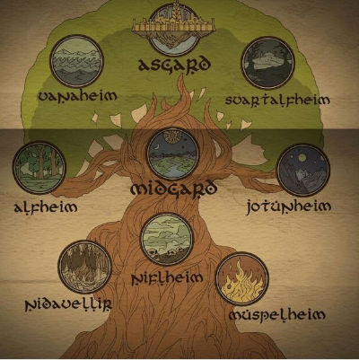
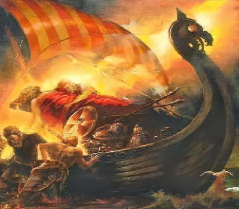
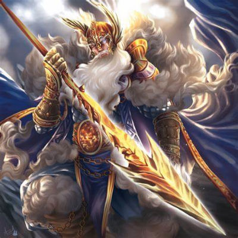
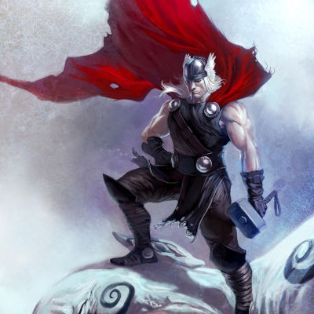

Mitologia Nórdica
A mitologia nórdica ou germânica foi desenvolvida nos países escandinavos ou nórdicos, como as atuais Suécia, Noruega, Finlândia, Islândia e Dinamarca.
Da mesma forma que a mitologia grega, romana e egípcia, a mitologia nórdica possui grande importância na configuração da cultura dos antepassados desses povos. Até hoje, ela inspira filmes, quadrinhos, vídeos, jogos, etc.
Constituída de deuses, heróis, anões, gigantes, serpentes, lobos e feiticeiros, as lendas relatam acontecimentos que procuram explicar a origem da humanidade, a vida após a morte, fenômenos da natureza, dentre outros.
Por ser crença entre vários povos é também chamada de mitologia viking ou germânica.
Os 9 mundos da mitologia nórdica
- Midgard: terra média e reino dos humanos, que corresponde ao planeta Terra (mundo físico). Jord é a deusa guardiã desse mundo.
- Asgard: separado do mundo dos humanos por imensos muros, Asgard é reino dos deuses (mundo superior, os céus) e seu guardião é Heimdall. Seus líderes são Odin, o deus maior da mitologia nórdica, e Frigga, a deusa da fertilidade.
- Niflheim: governada pela deusa Hel, deusa do inferno, e filha de Loki, Niflheim corresponde ao reino do gelo e do frio, onde se encontram gigantes e anões do gelo.
- Vanaheim: mundo de repouso dos deuses Vanir, local onde nasceu Njord, deus protetor dos navegadores, e o principal do clã dos Vanir.
- Svartalfheim: local onde os deuses subterrâneos, chamados de svartálfar, moravam. Seu líder é Hoder, deus cego, irmão de Balder, deus da justiça, e filho de Odin e Frigga.
- Jotunheim: reino dos gigantes, chamados de Jotuns, sendo que sua principal cidade é Utgard. Seu líder é Thrym, rei dos gigantes.
- Nidavellir: reino dos anões, que está localizado nos subterrâneos de Midgard. Seu líder é Vidar, deus da vingança, e filho de Odin.
- Muspelheim: reino do fogo, onde vivem os gigantes de fogo. Seu líder é Surtr, o gigante de fogo. Álfheim: reino dos elfos, seres mágicos de aparência humana e enorme beleza.
Bifrost
Bifrost é o nome dado à ponte de ligação entre o reino dos deuses, Asgard, e o reino dos homens, Midgard.
Yggdrasil
Árvore mítica e sagrada da mitologia nórdica, considerada a árvore da vida e que sustenta os nove mundos. Ela é o eixo do mundo e suas profundas raízes os conectam.
Valhalla
Valhalla, chamada de “Salão dos Mortos”, corresponde à residência dos deuses, ou seja, o local onde eles eram recebidos após a morte honrada nas batalhas.
Ragnarök
Na mitologia nórdica, Ragnarök corresponde ao local do destino final dos deuses. A batalha de Ragnarök aconteceu na região de Midgard, entre as forças do bem e do mal, resultando no fim do mundo e de todas as criaturas - deuses, heróis, gigantes, monstros.
Note que, diferente das outras mitologias, na mitologia nórdica, os deuses não são eternos, e com a batalha de Ragnarök muitos deles morrerão, dando origem a outros novos.
Deuses da mitologia nórdica
Odin
Odin é o maior dos deuses nórdicos, o pai dos deuses. Odin é representado como um homem velho, mas forte, e vestido com suas armas de guerreiro, pois ele é o deus da sabedoria, da guerra e da morte. Também é conhecido como Wotan na mitologia germânica.
Para obter a sabedoria, Odin ofereceu um dos olhos a Mimir, o guardião, e ainda ficou nove dias ferido por um flecha e pendurado na árvore Yggdrasil, para ser iniciado nas runas. Nos campos de batalha, Odin costumava cavalgar montado em seu cavalo de oito patas, Sleipnir.
Odin era casado com Frigga e teve vários filhos, dentre os quais Thor e Vidar. Também são suas filhas as Valquírias, que Odin manda aos campos de batalha, a fim de recolher os corpos daqueles que morreram lutando bravamente.
Os guerreiros escolhidos pelas Valquírias viverão felizes no palácio de Valhalla até o dia da Batalha de Ragnarök, quando Odin será morto. Não será, porém, o fim. A terra ressurgirá fértil e será repovoada por dois seres humanos e uma era de felicidade será instaurada.
Frigga
Frigga é a deusa da fertilidade e mulher de Odin. Frigga é representada como mãe, guerreira e sábia que conhece os segredos dos homens, mas não os revela. Seus símbolos são a roca, o fuso e as chaves, que significam a duração da vida e a sabedoria.
Quando os guerreiros morrem em combate, as Valquírias escolhem aqueles que irão para Valhalla, junto a Odin, e a outra metade ficará em Folkvang, perto da deusa.
Ali, passarão o resto dos dias exercitando-se e participando de alegres banquetes, até o fim dos tempos, na Batalha de Ragnarök.
Thor
Thor é odeus do trovão e filho de Odin. Talvez seja o deus nórdico mais popular até hoje, pois seu culto foi levado para a Inglaterra pelos Vikings. Também os romanos o conheceram quando lutavam contra os germânicos e acabaram descrevendo-o em seus relatos.
Thor é filho de Odin e Jord, a personificação da Terra, e é um guerreiro que utiliza o martelo mágico, Mjölnir, que nunca erra o alvo, e pode ter seu tamanho reduzido.
Os antigos acreditavam que os trovões eram a prova que Thor estaria usando o martelo, daí a crença em considerá-lo como deus do Trovão.
Thor foi casado duas vezes e gerou quatro filhos. O segundo casamento, o mais importante, foi com Sfi, que lhe deu três filhos.
Sfi era uma deusa belíssima e também guerreira habilidosa. No fim dos tempos, durante a Batalha de Ragnarök, diz-se que Thor matará e será morto por Jörmundgander, a grande serpente.
Outros deuses
Freyr: deus da abundância e irmão de Freyja.
Tyr: deus do combate e filho de Odin e Frigg.
Vidar: deus da vingança, filho de Odin.
Bragi: deus mensageiro da poesia e sabedoria, filho de Odin.
Balder: deus da justiça e filho de Odin e Frigga.
Njord: deus protetor dos navegadores.
Freya: deusa mãe, do amor e da luxúria, e filha de Njord e Skadi.
Loki: meio gigante e meio deus, ele é considerado o pai das mentiras.
Hel: deusa do inferno e filha de Loki.
Criaturas Nórdicas
Além dos deuses (entidades superiores), diversas criaturas fazem parte da mitologia nórdica, a saber:
- Heróis: possuíam alguns poderes e realizavam grandes feitos.
- Anões: seres que possuíam elevada inteligência superior.
- Jotuns: gigantes que tinham poderes especiais.
- Monstros: também chamados de bestas, possuíam poderes sobrenaturais.
- Valquírias: são as servas do maior dos deuses: Odin.
- Elfos: belas criaturas imortais, com poderes mágicos e que se assemelham aos humanos. São habitantes das florestas, fontes e bosques.